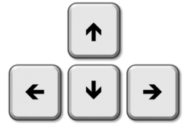

Hi! I created this game along with a reinforcement learning (RL) agent that uses Proximal Policy Opimization (PPO) with Generalized Advantage Estimation (GAE) to beat it (source code on Github). If you'd like to see the RL agent in action, click the "autoplay (pretrained)" button on the main menu.
If you'd like to train the PPO-GAE agent in your browser from scratch, click the "train" button above the game window.
To play the game, use the arrow keys

to get to the
at the end.
For every
you collect, you can use the
key to whack an enemy with your mallet.
For every
you collect, you can use the
key to shoot a fireball.
Welcome to the training module! A reinforcement learning agent is now training in your browser using Proximal Policy Opimization with Generalized Advantage Estimation to beat the game. Due to frame-syncing issues, please avoid pressing any gameplay keys.
If you'd like a closer look at how the agent is making progress, check out the episodic updates in the console ([CTRL]+[SHIFT]+[J]).
If you'd like to see the weights being updated in real time, navigate to the local storage within your browser. Please note that weights won't appear until the first training step has occurred (after ~15 episodes).